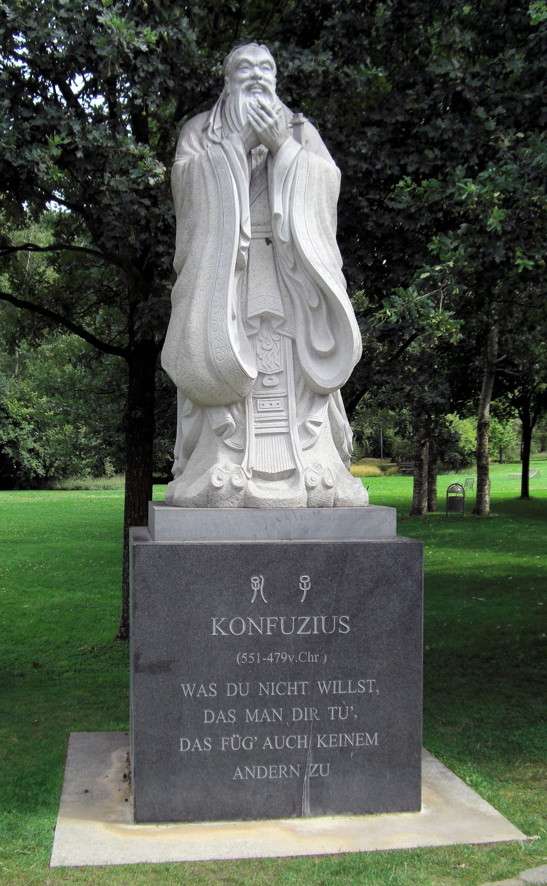

공자의 중심 사상은 그가 제자들과 나눈 문답 형식의 언행집인 《논어》 에 들어 있다.이를 요약하면 인간이 취하여야 할 모든 행동의 궁극적 지향점은 인(仁)에 있다고 할 수 있다.
인(仁)을 지향하고 예(禮)에 정진하고 실천하는 사람이 군자요, 그렇지 못한 사람이 소인이자 악인으로서 군자가 덕을 생각할 때 소인은 이익만을 생각하며, 악인은 타인에게 해를 끼쳐서라도 자신의 이익을 행한다. 또한 그는 '군자는 두루두루 소통하되 끼리끼리하지 않고, 소인은 끼리끼리하되 두루두루 소통하지 않는다.' (君子周而不比 小人比而不周)라 설파하였다.